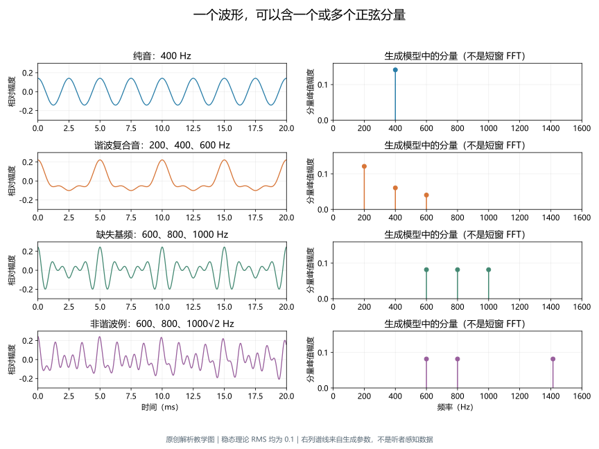
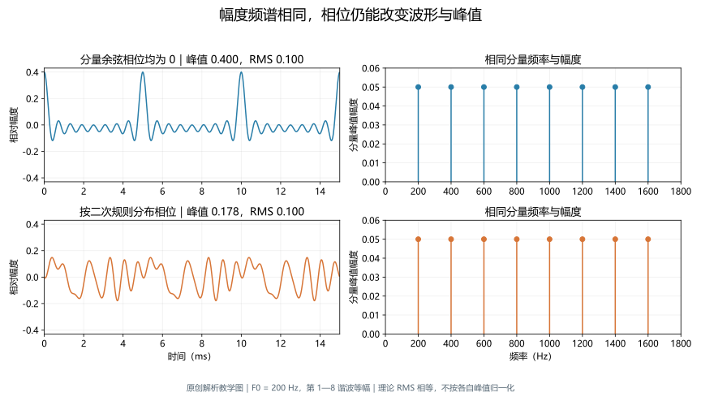
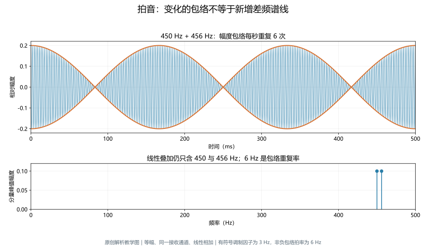
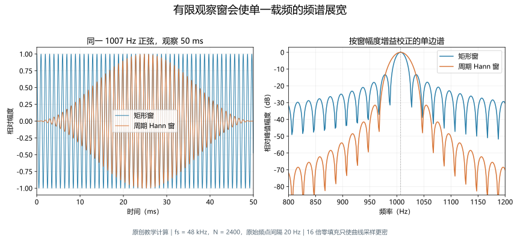

纯音与复合音
深度词条 · 本地预览 · 2026-10-10 · Draft，尚未完成专业审阅
纯音（pure tone）是在理想稳态条件下只含一个正弦频率分量的声音；复合音（complex tone）含有两个或更多不同频率的分量。它们描述声学信号的组成，不直接规定听者会听到几个音高或几个声源。一个乐器音即使听起来是“一个音”，也可以包含很多分量；把多个正弦分量叠加，亦不意味着听者一定将它们逐个听出。12
本文采用这种声学定义，围绕同一接收位置的波形及其表示展开。先说明分量怎样形成一个复合波形，再连接周期、相位、拍音、傅里叶分析和刺激合成。理想无限持续的正弦音与实际播放的短音需要区分：任何有起止的声音都带有时间包络，其完整频谱不会只剩一根无限细的线。38
声波与传播讨论声音怎样经过介质与环境到达接收点；本词条讨论接收点声音由哪些分量构成、怎样合成和分析。谐波与谐波性进一步解释共同整数倍结构，音高感知和音色感知则讨论听者怎样利用这些声学信息。数学分解、听觉表征与行为报告属于不同层次，不能互相替代。
从一个正弦音开始
频率、幅度与相位各说明什么
在固定位置，理想纯音的声压可以写为：
其中 为时间，单位 s； 为频率，单位 Hz； 为峰值声压，单位 Pa； 为以所选时间零点为参照的初相位，单位 rad。频率表示每秒振动次数，幅度表示声压波动的大小，相位表示在一个周期中从哪里开始。500 Hz 的周期为 2 ms，1000 Hz 的周期为 1 ms。3
相位取零时，余弦在时间零点处于正峰值；换用正弦写法时，相位参数需要相应转换。因此，比较两份刺激说明的“零相位”之前，应先确认使用的是正弦还是余弦。共同改变观察的时间零点，不改变一个孤立稳态纯音的频率和幅度，却会改变它的相位数值。
在数字合成里，同样的式子可写作 ，此时幅度常用无量纲的数字尺度，不能直接称为 Pa。只有结合转换器、播放增益、耳机或扬声器，以及测量位置的校准关系，才能将文件中的数值换成声压。软件显示“幅度 0.1”没有同时规定耳边声压级或听者的响度。10
“纯”不等于听感清澈
纯音的判据是稳态正弦分量，而非日常形容的清澈、悦耳或简单。笛音、人声元音和提示音可以具有单一明显音高，同时包含多个谐波；音叉在某些条件下可产生接近纯音的持续部分，也不能据器物名称保证录音没有其他模态、起始瞬态或设备失真。12
“复合音”也不等于“含复数数值的信号”。真实声压仍是实数函数；傅里叶分析用复数方便记录每个分量的幅度与相位，是一种数学表示。“一个声源还是多个声源”同样不是纯音和复合音分类的依据：一个振膜可以产生多分量声音，两个相同频率的理想正弦源在某点相加，也可能仍是该频率的正弦音。35
多个分量怎样形成一个波形
线性叠加先加瞬时值
有限个稳态分量构成的复合音可表示为：
为分量数，、 和 分别为第 个分量的频率、峰值幅度与相位。式子在每个时刻相加的是有正负的瞬时值。某些时刻分量同向，使总幅度较大；另一些时刻相互抵消，使总幅度较小。不能把每个分量的峰值始终相加，再将所得数值当作整段复合音的幅度。35
例如，200、400、600 Hz 的分量在每 5 ms 后同时回到原来的相位，总波形也重复。改变其中一个分量的幅度，会改变周期内的形状；保持各频率不变而改变相位，也能改变峰出现的位置。波形的尖峰、凹陷或过零点不需要各自对应一种新频率，分量的意义应通过模型或频谱分析判断。
在线性系统中，相加本身不会凭空生成一个新正弦频率。若输出出现输入中不存在的谐波或组合频率，应检查削波、非线性器件、声源或接收链的失真。听觉系统本身也具有非线性，但“听到一个低音”并不能独自证明空气声压里出现了相同频率的谱线。5
波形、谱线与谱包络
时域图回答“某一时刻的数值是多少”，频域图回答“不同频率分量如何分配”。理想纯音在单边幅度频谱中对应一条正频率线；理想稳态多分量声音对应多条线。每条线的横坐标是频率，纵坐标需明确是峰值幅度、均方根幅度还是其他标度，不能只凭“谱”字判断。49
连接或平滑各分量幅度得到的总体轮廓称为谱包络；随时间变化的幅度轮廓则属于时域包络。前者描绘高低频能量分布，后者描绘声音怎样起、落或起伏，两者不是同一条曲线。真实乐器在起音和衰减阶段，各分量幅度常随时间改变，一幅平均频谱会丢失这些变化。4

图 1 一个波形与它的分量。四行分别为 400 Hz 纯音，200、400、600 Hz 谐波复合音，600、800、1000 Hz 缺失基频复合音，以及 600、800、1000√2 Hz 的非谐波例。左列显示 20 ms 波形，右列按生成参数绘制谱线，未对短波形做 FFT。各例稳态理论 RMS 统一为 0.1，图为无量纲原创教学计算，不表示相等响度或实测耳边声压。3
谐波关系与周期性
复合音未必是谐波复合音
若所有分量频率都是共同参照 的正整数倍，即 ，它们属于谐波关系。不过，共同参照不一定就是实际信号的基频；基频由最小正重复周期决定。只有 400 和 800 Hz 时，最短周期为 2.5 ms，实际基频是 400 Hz，不能因为把它们编号为某个 200 Hz 序列的第 2、4 谐波，就改变这个事实。3
若分量为 600、800、1000 Hz，则共同基频为 200 Hz，最短周期为 5 ms，尽管没有 200 Hz 分量。这个例子把三个概念分开：最低存在分量是 600 Hz，声学基频是 200 Hz，听者报告的音高需要另行测量。缺失基频音高研究正说明，频谱最左边的峰并不总决定总体音高。12
非谐波结构则不符合所讨论的共同整数倍序列。一个谐波被失谐、钟或金属物体的若干振动模态，都可形成非谐波复合音。它们可能仍有可描述的音高或几个音高，不应把“非谐波”自动译为“没有音高”“噪声”或“不悦耳”。失谐是否被察觉、是否被听成一个独立音，是不同实验问题。13
非谐波不必等于数学上非周期
严格周期性要求所有存在分量共享某个有限共同周期。600、800、1050 Hz 虽然不属于原先 200 Hz 的谐波序列，仍都是 50 Hz 的整数倍，整体可以每 20 ms 重复。若将一项设成 Hz，而其他项保留 600 与 800 Hz，则理想连续时间分量没有有限共同周期。两者都可称为相对于原参照的非谐波例，数学周期性却不同。
实际数字参数具有有限精度，播放器输出也只有有限时长；将一个短片段周期性循环，更会人为引入循环周期。所以，观察到录音末尾再次出现相似波形，不足以证明原声源严格周期；没有在显示窗内看到重复，也不证明绝无共同周期。对自然声音，局部近似周期或时变频率往往比严格无限周期更贴合实际。47
噪声也能由很多频率成分描述，但通常不用有限个固定频率稳态音来穷尽它。讨论复合音与噪声时应说明是窄带、多分量刺激，还是具有随机、连续谱或宽带性质的过程。能作傅里叶表示，并不意味着所有声音在实验中都应被归为同一种刺激类型。
幅度、均方根与总体声级
等分量幅度和等总体幅度不是同一控制
一个正弦在完整周期上的均方根幅度为 。当不同频率分量在所选区间内正交，例如区间包含谐波复合音的整数个共同周期时，总均方值为：
这里 均为峰值幅度，不能与分量 RMS 混用。公式依赖交叉项平均为零；任意短区间、频率很接近且观察不足一个拍周期、起止加窗或多个同频分量时，应直接计算有限区间的均方根，而不是无条件套用。38
三个不同频率的等幅分量各有 0.1 的 RMS，在满足上述条件时，总 RMS 为 。若将它们与 RMS 为 0.1 的纯音比较，就没有控制住总体数字均方值。要把三分量复合音的总体 RMS 也设为 0.1，每个分量的 RMS 应改为 。这是一项教学计算，不是刺激强度的通用推荐。
声压级根据均方根声压的对数标度定义，所以分量声压级不应直接算术相加。同样，等总体 RMS、等耳边声压级与等主观响度是不同控制条件；频谱分布、听觉灵敏度和任务都可能影响后者。描述纯音与复合音实验时，需说清保持的是分量级、总体级还是经测量得到的响度匹配。
峰均比会影响设备余量
峰均比为最大绝对瞬时值与 RMS 的比值，常称 crest factor。它描述达到某个均方值时需要容纳多大瞬时峰值，不能当作音色或响度的单一指标。等 RMS 的刺激也可能需要不同播放余量；如果把所有样本都分别压到相同峰值，就可能改变原来打算保持相同的总体能量。
削波会改变波形，并生成额外谐波。在数字端没有超限，也不能保证模拟输出、耳机或扬声器完全线性；反过来，测得某条很小的谱线，也需排除背景噪声、分析窗及测量链本身的影响，再判断是否为真正失真。35
相位怎样改变复合音
相同幅度频谱可以对应不同波形
把各分量的频率、幅度固定，只改变相位，理想稳态的幅度谱线仍然相同，时域波形却可以从峰值集中变成较均匀分散。幅度频谱因此不能完整重建原信号；通常还需要相位或等价的信息。纯音整体延迟与复合音中各分量的相对相位变化，也应区分：前者只是时间平移，后者可以真正改变周期内结构。38
以 200 Hz 为共同基频，叠加第 1—8 谐波，各分量等幅且总体 RMS 为 0.1。如果各分量余弦相位均为零，时间零点的峰值是 0.4，峰均比为 4。另一条件用 分布相位，同样的频率与幅度给出约 0.1785 的最大绝对值、约 1.785 的峰均比。数字来自本词条 48 kHz 采样的独立计算，没有代表听者判断或设备性能。
若将两者都分别归一化至峰值 1，第一条件会放大 2.5 倍，第二条件会放大约 5.60 倍，结果 RMS 不再相等。这样的处理会把相位和总体级一起改变，无法作为只操纵相位的公平对照。相位实验应保留相同分量幅度，并检查输出有没有超限。

图 2 相位对照。两行均使用 200 Hz 的第 1—8 谐波且等分量幅度，上行余弦相位为零，下行按正文二次规则分布相位；理论 RMS 均为 0.1，左图纵轴统一。最大绝对值分别约 0.4000、0.1785。右图相同幅度谱不包含相位，图中相位规则只用于教学，不等同于某个听觉滤波器的响应。3
相位能否听出要由任务判断
“幅度谱相同”不能推出“所有情况下听起来相同”。听觉滤波后，多个分量在同一滤波通道内相互作用，输出包络可能随相位改变。经典实验通过改变基频、频谱区域和分量相位，发现相位对音高匹配的影响随刺激条件改变，不能概括为人耳完全不敏感或永远敏感。11
但这种行为效应也不是对耳蜗某一位置波形的直接测量。相位、可分辨性、谐波序号与绝对频率经常同时关联；比较条件时还需检查总体级、起止瞬态和失真是否不同。对纯音相位，孤立稳态判断与有另一声音、时间参考或双耳参考的判断更是不同问题。
拍音与差频分量
相近频率相加产生慢起伏
两个等幅、同初相位的正弦音相加，可用恒等式写成：
当频率相近时，这个表达式显示快速振动外有较慢的幅度起伏。例如 450 与 456 Hz 的平均频率为 453 Hz，有符号乘因子以 3 Hz 振动；幅度大小取其绝对值，正、负峰都对应幅度最大，所以非负包络每秒重复 6 次，拍率为 Hz。这解释了常见的二倍误读。6
如果两分量幅度不相等，包络的谷未必降到零；若初相位不同，起伏的时刻会移动。频差继续增大时，听感还受到频率范围、水平、听觉滤波和任务影响，不能把任意频差都解释为听者能逐次计数的慢拍。
拍率不是新增的低频谱线
在线性叠加的这个例子中，声压仍只有 450 与 456 Hz 两个频率；并没有因为包络以 6 Hz 重复，就在原声压幅度谱中自动新增 6 Hz 谱线。453 Hz 也只是恒等式中的平均频率，不能因此当作第三条输入谱线。56
非线性运算则可以产生真正的差频分量。例如将两频率之和平方，交叉项含两余弦的乘积，恒等式会给出和频与差频。扬声器失真、非线性处理或听觉系统的非线性，和空气中两个小振幅声波的线性拍动应分别研究。观察到低频感觉时，需要辨明测量的是声压谱、包络谱还是行为报告。
这里的图是同一通道中的物理叠加，不能直接当作把两个不同纯音分别送入左右耳的双耳拍。后者的输入配置和处理层次不同，不能仅凭相同频差就认为获得了相同刺激。

图 3 拍率与分量分开读。上图为两个等幅分量的线性叠加，橙线为非负幅度包络的上下界；下图直接显示生成频率。包络拍率为 6 Hz，有符号乘因子为 3 Hz，均不是原声压谱中额外的分量。图为原创解析示例，没有模拟听觉非线性或双耳拍。6
有限时长声音怎样分析
频谱泄漏不证明源中有很多稳态分量
无限持续纯音和有起止的纯音载频需要区分。用有限窗截取正弦，相当于将正弦乘以时间窗，其连续频谱会展宽。突然开关的矩形包络旁瓣较明显；平滑起落可以减弱部分旁瓣，同时改变主瓣宽度。因此，短音的 FFT 出现很多非零频点，并不足以证明原来的稳态声源不是正弦。8
整周期截取且载频正好落在 FFT 频点时，未加窗的离散结果可以只占一对对应频点；这依赖采样格点，不是实际有限声的连续频谱重新变成无限细的线。对录音中的纯度判断，需报告所分析的是完整短音还是平稳中段，以及时长、窗和输出链。
频点间隔与实际分辨能力
对采样率为 、记录含 个样本的未零填充离散傅里叶变换，频点间隔为 。采样率为 48 kHz、记录为 50 ms 时，，频点间隔是 20 Hz。若载频为 1007 Hz，就不正好位于这组间隔为 20 Hz 的频点上。7
在频率轴上补更多零填充点，可以更密地采样同一窗所决定的谱形，帮助观察峰的位置；并没有取得新的观察时长。因而，“图上的点更多”不能自动变成“能分开更近的两个频率”。判断能否分辨还要看窗主瓣、两分量相对幅度、信噪比和所用估计方法。8

图 4 有限观察与窗。48 kHz 采样，1007 Hz 正弦，记录 2400 个样本即 50 ms；比较矩形窗与周期 Hann 窗。单边幅度按窗增益校正，绘图使用 16 倍零填充，原始频点间隔仍是 20 Hz。图为独立计算，展示旁瓣和主瓣的取舍，不是设备纯度或听觉分辨阈测量。8
幅度谱和功率谱密度须注明标度
幅度谱记录分量的幅度，功率谱密度记录均方量在每单位频率带宽上的分布。若输入以 Pa 表示，后者常用 Pa²/Hz；若输入以数字单位表示，纵轴不能自动写成声学单位。同一个窄带音在不同窗或不同标度下，谱峰高度可能不同；比较总体均方值时需采用相应的积分或离散求和关系。9
实数信号的双边谱在正、负频率间具有共轭关系。负频率是数学表示的一部分，不表示另一种“负音高”。使用实输入单边 FFT 时，恢复内侧正频率分量峰值通常需要相应的倍数与窗校正；直流与奈奎斯特频点应单独处理。未注明归一化的 FFT 模值，不能直接当作峰值声压。7
合成与分析的可复核例子
先说明参数，再检查输出
本词条教学脚本将频率、分量幅度、相位、采样率、时长和起落包络分别记录。纯音例用 400 Hz；复合音例用 200、400、600 Hz，未缩放前幅度比例为 。合成后按稳态理论 RMS 统一缩放，保留各分量的相对关系。数字文件只表示合成输入，不代表某型号播放设备的输出。
复核可沿两条路线进行。时域路线查看若干周期和峰值，检查截断、直流偏置与数字超限；频域路线在共同整数周期的平稳段计算频谱，确认存在分量的位置、幅度和其他频率的数值误差。随后才加入有限时长包络，另检查完整短音的谱形。把平稳结构和起止影响分开，有助于定位误差来自合成、加窗还是设备。78
Audacity 的 Tone 工具能选择正弦、方波等波形，并设置频率、数字幅度和时长；“设置一个频率”并不意味着所有波形都成为纯音，方波仍含多个谐波。本文未运行该软件，提供的文件由解析脚本直接生成；方法入口用于说明参数的意义，而非把软件默认值作为实验标准。10
可试听的教学样本
下列单声道 WAV 均为 48 kHz、16 位 PCM、1.2 s，起止各用 20 ms 升余弦过渡。稳态理论 RMS 均为 0.1；起落包络使整文件 RMS 略低，精确值另见生成参数。这里控制的是数字幅度，播放设备与音量设置决定实际声级；试听不能替代校准或受控心理声学测量。
| 样本 | 观察目标 | 播放 |
|---|---|---|
| 400 Hz 纯音载频 | 单一稳态正弦；完整短音含起落 | |
| 200 Hz 谐波复合音 | 三个分量，不应只按音高高低判断区别 | |
| 八谐波余弦同相 | 与下一项同幅度谱、同稳态 RMS | |
| 八谐波二次相位 | 相位改变，听感需由任务与输出条件判断 | |
| 450 与 456 Hz | 同一通道线性叠加的 6 Hz 拍率 |
纯音与三分量例没有设计为相同音高；相位对照才固定了分量频率和幅度。没有听出相位差，不能直接说明听觉系统忽略相位；听出差异，也不能排除设备传递函数或起止结构的参与。此处样本没有来自真实受试者的正确率、阈值或评级。
怎样研究听者对复合音的利用
把任务与变量一一对应
声学上列出多个分量，和听者能够分别利用它们，是两回事。音高匹配要求调整另一声音，使其与复合音的总体音高相近；分量匹配要求听出某一分量并匹配其音高；谱轮廓判断要求比较分量的相对幅度。即使使用相同刺激，不同任务也可以得到不同的性能与解释。121315
研究相位效应时，可以固定分量频率、幅度和总体声级，改变相位条件，测量辨别正确率或音高匹配。研究谱轮廓时，可以提高一个分量的相对幅度，同时随机变化整个刺激的总体级，减少仅凭整段变响作答的机会。研究某一失谐分量是否形成独立声音，则需要相应的听出或匹配任务，不能仅把“发现不同”当作已经完成声源分离。1315
| 问题 | 操纵与任务 | 主要控制与限制 |
|---|---|---|
| 相位是否影响判断 | 固定分量频率、幅度，改变相位；辨别或匹配 | 峰均比、输出失真、起止与总体级 |
| 某一分量能否听出 | 分量探测、纯音与分量的匹配 | 绝对频率、邻近分量、声级、时长、任务训练 |
| 是否利用相对谱轮廓 | 改变一分量幅度，整体级随机变化 | 避免总体响度线索，检查单分量可听性 |
| 复合音总体音高是什么 | 纯音匹配或旋律任务 | 缺失基频、八度混淆、谐波结构、可能失真产物 |
声学上“可分成几条谱线”不是听觉可分辨性的充分判据。听觉滤波、神经时序和中枢组合共同约束可利用信息；谐波序号也不是适用于所有声级、频率和听力状态的硬阈值。尤其不能依据一幅电脑频谱就宣称听者能逐条听出全部分量。11
经典与近期证据怎样互相约束
Shackleton 与 Carlyon 的 1994 年原始摘要描述基频、频谱区域和相位的联合操纵；相位对音高匹配的影响随这些条件变化。这类结果支持在模型中区分谱线、滤波后结构和任务，却不能给出“所有相位变化必然改变音高”的一般规律。11
Hartmann 等的 1990 年研究用失谐分量的音高匹配，区分将其听出与仅发现复合音发生变化；作者同时讨论局部拍动、粗糙感和个体差异等替代线索。其神经同步解释是基于行为数据提出的机制解释，不是直接记录了人类听神经的每个分量响应。13
2011 年的纯音与复合音对照表明，在相应匹配和旋律任务中，所有分量都位于高频的谐波复合音仍可传达较低的总体音高。这约束了将总体音高简单等同于最低存在频率或某一外周限值的解释，不能推出任何高频多分量声音都有同样表现。12
Whiteford 与 Oxenham 的 2023 年研究以低基频、高频谐波的复合音测量调频检测，提出中枢音高处理限制的解释；本文只核对原始摘要，不据此补写全部实验参数或认定锁相机制在所有任务中无关。14
Guest 等 2024 年研究则比较不同频段中的谱轮廓与谱时域波纹判断，整体声级随机变化用于限制简单的响度策略。在其扩展高频条件，谱模式判断的困难不能仅用耳蜗频率选择性解释。该结果说明可听到高频分量、区分其强度和稳定利用多分量相对结构，是不同能力；并不表示高频声音完全无法感知。15
应用与阅读边界
纯音便于单独操纵频率和级别，是纯音测听和许多心理声学实验的基本刺激。其优势是参数清晰，限制是与自然声音的多分量、时变结构相距较远。单频任务结果不能自动代表竞争言语、音乐或复杂环境中的全部聆听能力。
复合音用于控制谐波组成、相位、谱轮廓和共同周期，使研究者能分别检验音高、音色、频率分析与声音分组的线索。用于解释言语或乐器时，还需加入起音、衰减、谱随时间变化、噪声和传播滤波，固定的少数正弦之和只是有限近似。4
分析设备输出时，正弦输入可以帮助识别新增谐波，多分量输入可以暴露相互作用；结论应限定于测过的级别、频率与负载条件。查看输出频谱前，先排除归一化、窗、录音链和数字超限造成的伪差异，再讨论设备失真。
继续阅读可按“分量—共同周期—表征—感知”的顺序进行：基频解释最短重复周期，谐波与谐波性解释整数倍关系，时频图解释局部频谱随时间变化，听觉滤波器与频率分辨率解释听觉对分量的选择性。纯音与复合音的分类提供输入描述，最终感知仍需要结合具体听者、设备、刺激与任务判断。
参考文献与证据范围
[1] Simon Fraser University, Sonic Studio (未标注页面出版年（2026-10-10 核验）). Handbook for Acoustic Ecology — Simple Tone. SFU 声学生态学手册。访问范围：fulltext。阅读定义与术语差异：本文明确采用单一正弦频率的声学定义，不将“听起来只有一个音高”作为纯音判据。
[2] Simon Fraser University, Sonic Studio (未标注页面出版年（2026-10-10 核验）). Handbook for Acoustic Ecology — Complex Tone. SFU 声学生态学手册。访问范围：fulltext。阅读多频率分量定义与用语不一致说明；不采用页面将复合音响度简单概括为各分量响度相加的句子。
[3] MIT MAS.160 课程 (2007). MAS.160 Signals, Systems and Information for Media Technology — Recitation 3. MIT OpenCourseWare。访问范围：fulltext。阅读 PDF 第 11–15、32–36 页的傅里叶级数、正弦与叠加、削波例；不转载图，不执行讲义中的高增益播放代码。
[4] Simon Fraser University, Sonic Studio (未标注页面出版年（2026-10-10 核验）). Handbook for Acoustic Ecology — Fourier Analysis. SFU 声学生态学手册。访问范围：fulltext。阅读周期信号的正弦分解、幅度相位及真实乐器的时变结构；不采用“耳朵执行傅里叶分析”作为字面神经机制，不转载原图。
[5] Joe Wolfe / UNSW School of Physics (未标注出版年（2026-10-10 核验）). Physclips — Linear and non-linear superposition. UNSW Physclips。访问范围：fulltext。阅读线性相加与非线性电路对照，核对线性叠加不新增频率、非线性可生成组合分量；未采用页面二极管近似公式或转载演示。
[6] William Moebs; Samuel J. Ling; Jeff Sanny (2016). University Physics Volume 1 — 17.6 Beats. OpenStax / Rice University。访问范围：fulltext。阅读两频率叠加与差频拍率；本文选相近频率教学例，独立区分有符号调制因子与非负幅度包络，不把任意大的频差都称为可听的慢拍。
[7] NumPy Developers (官方在线文档（2026-10-10 核验）). NumPy Reference — numpy.fft.rfft. NumPy 官方文档。访问范围：documentation。阅读实输入的非负频率输出、长度、归一化及零填充参数；生成脚本使用本机 NumPy 1.26.4，未假称运行在线文档所示版本。
[8] SciPy Community (官方在线文档（2026-10-10 核验）). SciPy User Guide — Spectral Analysis. SciPy 官方信号处理指南。访问范围：documentation。阅读 Spectral Analysis 的有限时长正弦、采样与窗、幅度和密度标度及相位相关段落；图和数值由本文独立计算，不照抄文档中有限区间均方值的简化为任意时长精确式。
[9] SciPy Community (官方在线文档（2026-10-10 核验）). SciPy Reference — scipy.signal.periodogram. SciPy 官方文档。访问范围：documentation。阅读 spectrum 与 density、单双边谱和窗归一化的官方定义；未运行该函数复现文档示例，本文图由 NumPy 显式计算。
[10] Audacity Team (官方在线文档（2026-10-10 核验）). Audacity Manual — Tone. Audacity 官方手册。访问范围：documentation。阅读波形、频率、数字幅度与时长字段；未实际运行 Audacity，不把软件数字幅度字段当作校准声压级或主观响度。
[11] Shackleton, T. M. & Carlyon, R. P. (1994). The role of resolved and unresolved harmonics in pitch perception and frequency modulation discrimination. Journal of the Acoustical Society of America, 95(6), 3529–3540。访问范围：abstract。已核对原始摘要：不同频谱范围、基频及分量相位条件下的音高匹配和调频辨别；用于说明可分辨性与任务、相位之间的关系，不规定通用谐波阶数分界。
[12] Oxenham AJ, Micheyl C, Keebler MV, Loper A, Santurette S. (2011). Pitch perception beyond the traditional existence region of pitch.. Proceedings of the National Academy of Sciences of the United States of America。访问范围：abstract。核查正式书目与原始摘要；本稿不声称复现原实验或核查全部正文。
[13] William Morris Hartmann, Stephen McAdams, Bennett K. Smith (1990). Hearing a mistuned harmonic in an otherwise periodic complex tone. The Journal of the Acoustical Society of America。访问范围：abstract。失谐谐波的音高匹配与听觉分离实验；支持操作性任务区分，不将实验解释当作唯一神经机制。
[14] Kelly L. Whiteford; Andrew J. Oxenham (2023). Sensitivity to Frequency Modulation is Limited Centrally. Journal of Neuroscience, 43(20), 3687–3695。访问范围：abstract。阅读原始摘要与书目：低 F0、高频谐波的 FM 检测支持中枢限制解释；没有据摘要声称直接记录人类听神经或否定所有锁相机制。
[15] Daniel R. Guest; Neha Rajappa; Andrew J. Oxenham (2024). Limitations in human auditory spectral analysis at high frequencies. Journal of the Acoustical Society of America, 156(1), 326–340。访问范围：fulltext。阅读摘要、引言、方法和结果相关原文段落：谱轮廓任务、整体声级随机变化及高频条件的限制；不把某项轮廓判断较差写成所有高频听觉丧失，不复现样本数据或阈值。